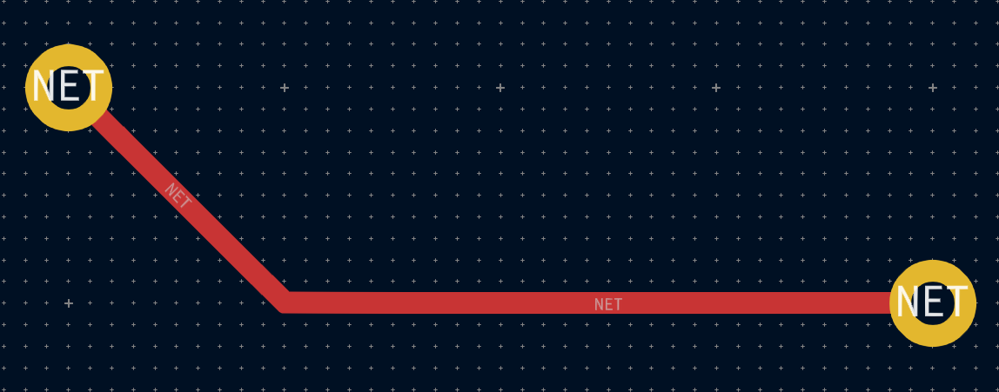
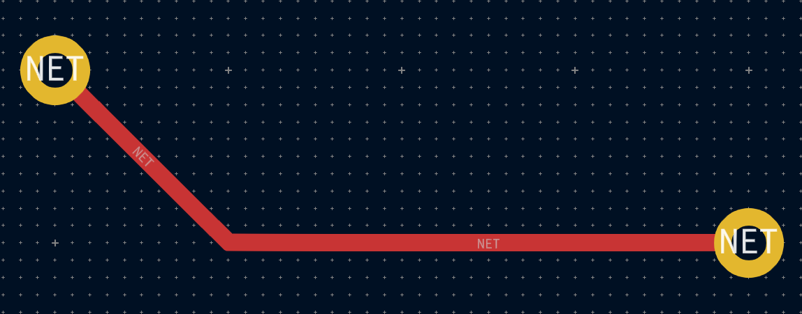

4.9. Routing tracks
KiCad features an interactive router that:
-
Allows manual or guided (semi-automatic) routing of single tracks and differential pairs.
-
Enables modifications of existing designs by:
-
Re-routing existing tracks when they are dragged
-
Re-routing tracks attached to footprint pads when the footprint is dragged
-
-
Allows tuning of track lengths and differential pair skew (phase) by inserting serpentine
tuning shapes for designs with tight timing requirements
By default, the router respects the configured design rules when placing tracks: the size (width) of new tracks will be taken from the design rules and the router will respect the copper clearance set in the design rules when determining where new tracks and vias can be placed. It is possible to disable this behavior if desired by using the Highlight Collisions router mode and turning on the Allow DRC Violations option in the router settings (see below).
The router has three modes that can be selected at any time. The router mode is used for routing new tracks, but also when dragging existing tracks using the Drag (hotkey D) command. These modes are:
-
Highlight Collisions: in this mode, most of the router features are disabled and routing is fully manual. When routing, collisions (clearance violations) will be highlighted in green and the newly-routed tracks cannot be fixed in place if there is a collision unless the Allow DRC Violations option is turned on. In this mode, up to two track segments may be placed at a time (for example, one horizontal and one diagonal segment).
-
Shove: in this mode, the track being routed will walk around obstacles that cannot be moved (for example, pads and locked tracks/vias) and shove obstacles that can be moved out of the way. The router prevents DRC violations in this mode: if there is no way to route to the cursor position that does not violate DRC, no new tracks will be created.
-
Walk Around: in this mode, the router behaves the same as in Shove mode, except no obstacles will be moved out of the way.
Which mode to use is a matter of preference. For most users, we recommend using Shove mode for the most efficient routing experience or Walk Around mode if you do not want the router to modify tracks that are not being routed. Note that Shove and Walk Around modes always create horizontal, vertical, and 45-degree (H/V/45) track segments. If you need to route tracks with angles other than H/V/45, you must use Highlight Collisions mode and enable the Free Angle Mode option in the Interactive Router Settings dialog.
There are five main routing functions: Route Single Track, Route Differential Pair, Tune length of a single track, Tune length of a differential pair, and Tune skew of a differential pair. All of these are present in both the Route menu dropdown (individually) on the top toolbar and the drawing toolbar in two overloaded icons on the drawing toolbar on the right. The use of the overloaded icons is described above. One is for the two Route functions and one is for the three Tune functions. In addition, the Route menu allows the selection of Set Layer Pair and Interactive Router Settings.
To route tracks, click the Route Tracks  icon (from the
drawing toolbar or from the top toolbar under Route) or use the hotkey X. Click on a
starting location to select which net to route and begin routing. The net being routed will
automatically be highlighted and the allowable clearance for the net will be indicated with a
gray outline around the tracks being routed. The clearance outline can be disabled by changing
the Clearance Outlines setting in the Display Options section of the Preferences dialog.
icon (from the
drawing toolbar or from the top toolbar under Route) or use the hotkey X. Click on a
starting location to select which net to route and begin routing. The net being routed will
automatically be highlighted and the allowable clearance for the net will be indicated with a
gray outline around the tracks being routed. The clearance outline can be disabled by changing
the Clearance Outlines setting in the Display Options section of the Preferences dialog.
|
Note
|
The clearance outline shows the maximum clearance from the routed net to any other copper on the PCB. It is possible to use custom design rules to specify different clearances for a net to different objects. These clearances will be respected by the router, but only the largest clearance value will be shown visually. |
When the router is active, new track segments will be drawn from the routing start point to the editor cursor. These tracks are unfixed temporary objects that show what tracks will be created when you use a left-click or the Enter key to fix the route. The unfixed track segments are shown in a brighter color than the fixed track segments. When you exit the router using the Esc key or by selecting another tool, only the fixed track segments will be saved. The Finish Route action (hotkey End) will fix all tracks and exit the router.
While you are routing, you can use the Undo Last Segment command (hotkey Backspace) to unfix the tracks you most recently fixed. You can use this command repeatedly to step back through the route that you have already fixed.
In previous versions of KiCad, using the left mouse button or Enter to fix the routed segments would fix all segments up to but not including the segment ending at the mouse cursor location. In KiCad 6, this behavior is now optional, and by default, all segments including the one ending at the mouse cursor location will be fixed. The old behavior can be restored by disabling the "Fix all segments on click" option in the Interactive Router Settings dialog.
While routing, you can hold the Ctrl key to disable grid snapping, and hold the Shift key to disable snapping to objects such as pads and vias.
|
Note
|
Snapping to objects can also be disabled by changing the Magnetic Points preferences in the Editing Options section of the Preferences dialog. We recommend that you leave object snapping enabled in general, so that you do not accidentally end tracks slightly off-center on a pad or via. |
4.9.1. Track posture
When routing in H/V/45 mode, the posture refers to how a set of two track segments connect two points that cannot be reached by a single H/V/45-degree segment. In such a case, the points will be connected by one horizontal or vertical segment and one diagonal (45-degree) segment. The posture refers to the order of these segments: whether the horizontal/vertical segment or the diagonal segment comes first.
 

KiCad’s router attempts to pick the best posture automatically based on a number of factors. In general, the router will attempt to minimize the number of corners in a route, and will avoid "bad" corners such as acute angles whenever possible. When routing from or to a pad, KiCad will choose the posture that lines up the route with the longest edge of the pad.
In some cases, KiCad cannot guess the posture you intend correctly. To switch the posture of the track while routing, use the Switch Track Posture command (hotkey /).
In situations where there is no obvious "best" posture (for example, when starting a route from a via), KiCad will use the movement of your mouse cursor to select the posture. If you would like the route to begin with a straight (horizontal or vertical) segment, move the mouse away from the starting location in a mostly horizontal or vertical direction. If you would like the route to begin diagonally, move in a diagonal direction. Once the cursor is a sufficient distance away from the routing start location, the posture is "locked" and will no longer change unless the cursor is brought back to the starting location. Detection of posture from the movement of the mouse cursor can be disabled in the Interactive Router Settings dialog as described below.
|
Note
|
If you use the Switch Track Posture command to override the posture chosen by KiCad, the automatic detection of posture from mouse movement will be disabled for the remainder of the current routing operation. |
4.9.2. Track corner mode
KiCad’s router can place tracks with either sharp or rounded (arc) corners when routing in H/V/45 mode. To switch between sharp and rounded corners, use the Track Corner Mode command (hotkey Ctrl+/). When routing with rounded corners, each routing step will place either a straight segment, a single arc, or both a straight segment and an arc. The track posture determines whether the arc or the straight segment will be placed first.
Track corners can also be rounded after routing by using the Fillet Tracks command after selecting the desired tracks.
|
Note
|
Dragging of tracks with arcs is not yet supported. Arcs will be converted back to sharp corners when dragging tracks or when tracks are moved by the router in Shove mode. |
4.9.3. Track width
The width of the track being routed is determined in one of three ways: if the routing start point
is the end of an existing track and the  button on the top
toolbar is enabled, the width will be set to the width of the existing track. Otherwise, if the
track width dropdown in the top toolbar is set to "use netclass width", the width will be taken
from the netclass of the net being routed (or from any custom design rules that specify a different
width for the net, such as inside a neckdown area). Finally, if the track width dropdown is set to
one of the pre-defined track sizes configured in the Board Setup dialog, this width will be used.
button on the top
toolbar is enabled, the width will be set to the width of the existing track. Otherwise, if the
track width dropdown in the top toolbar is set to "use netclass width", the width will be taken
from the netclass of the net being routed (or from any custom design rules that specify a different
width for the net, such as inside a neckdown area). Finally, if the track width dropdown is set to
one of the pre-defined track sizes configured in the Board Setup dialog, this width will be used.
|
Note
|
The track width can never be lower than the minimum track width configured in the Constraints section of the Board Setup dialog. If a pre-defined width is added that is lower than this minimum constraint, the minimum constraint value will be used instead. |
KiCad’s router supports a single track width for the active route. In other words, to change widths in the middle of a track, you must end the route and then restart a new route from the end of the previous route. To change the width of the active route, use the hotkeys W and Shift+W to step through the track widths configured in the Board Setup dialog.
4.9.4. Placing vias
While routing tracks, switching layers will insert a through via at the end of the current (unfixed) track. Once you place the via, routing will continue on the new layer. There are several ways to select a new layer and insert a via:
-
By using the hotkey to select a specific layer, such as PgUp to select
F.Cuor PgDn to selectB.Cu. -
By using the "next layer" or "previous layer" hotkeys (+ and -).
-
By using the "Place Via" hotkey (V), which will switch to the next layer in the active layer pair.
-
By using the Select Layer and Place Through Via action (hotkey <), which will open a dialog to select the target layer.
The size of the via will be taken from the active Via Size setting, accessible from the drop-down in the top toolbar or the Increase Via Size (') and Decrease Via Size (\) hotkeys. Much like track width, when the via size is set to "use netclass sizes", the via sizes configured in the Net Classes section of the Board Setup will be used (unless overridden by a custom design rule).
If microvias or blind/buried vias are enabled in the Constraints section of the Board Setup dialog, these vias can be placed while routing. Use the hotkey Ctrl+V to place a microvia and Alt+Shift+V to place a blind/buried via. Microvias may only be placed such that they connect one of the outer copper layers to an adjacent layer. Blind/buried vias may be placed on any layer.
Vias placed by the router are considered to be part of a routed track. This means that the via net can be updated automatically (just like track nets can), for example when updating the PCB from the schematic changes the net name of the track. In some cases this may not be desired, such as when creating stitching vias. The automatic update of via nets can be disabled for specific vias by turning off the "automatically update via nets" checkbox in the via properties dialog. Vias placed with the Add Free-standing Vias tool are created with this setting disabled.
4.9.5. Routing differential pairs
Differential pairs in KiCad are defined as nets with a common base name and a positive and
negative suffix. KiCad supports using + and -, or P and N as the suffix. For example, the
nets USB+ and USB- form a differential pair, as do the nets USB_P and USB_N. In the first
example, the base name is USB, and USB_ in the second. The suffix styles cannot be mixed: the
nets USB+ and USB_N do not form a differential pair. Make sure you name your differential pair
nets accordingly in the schematic in order to allow use of the differential pair router in the PCB
editor.
To route a differential pair, click the Route Differential Pairs
 icon (from the drawing toolbar or from the top toolbar under
Route) or use the hotkey 6. Click on a pad, via, or the end of an existing differential
pair track to start routing. You can start routing from either the positive or negative net of a
differential pair.
icon (from the drawing toolbar or from the top toolbar under
Route) or use the hotkey 6. Click on a pad, via, or the end of an existing differential
pair track to start routing. You can start routing from either the positive or negative net of a
differential pair.
|
Note
|
It is not currently possible to start routing a differential pair in the middle of an existing differential pair track. |
The differential pair router will attempt to route the pair of tracks with a gap taken from the design rules (differential pair gap can be configured in the Net Classes section of the Board Setup dialog, or by using custom design rules). If the starting or ending location of the route is a different distance apart from the configured gap, the router will create a short "fan out" section to minimize the length of track where the differential pair is not coupled.
When switching layers or using the Place Via (V) action, the differential pair router will create two vias next to each other. These vias will be placed as close as possible to each other while respecting the design rules for copper and hole-to-hole clearance.
4.9.6. Modifying tracks
After tracks have been routed, they can be modified by moving or dragging, or deleted and re-routed. When a single track segment is selected, the hotkey U can be used to expand the selection to all connected track segments. The first press of U will select track segments between the nearest junctions with pads or vias. The second press of U will expand the selection again to include all track segments connected to the selected track on all layers. Selecting tracks with this technique can be used to quickly delete an entire routed net.
There are two different drag commands that can be used to modify a track segment. The Drag (45-degree mode) command, hotkey D, is used to drag tracks using the router. If the router mode is set to Shove, dragging with this command will shove nearby tracks. If the router mode is set to Walk Around, dragging with this command will walk around or stop at obstacles. The Drag Free Angle command, hotkey G, is used to split a track segment into two and drag the new corner to any location. Drag Free Angle behaves like the Highlight Collisions router mode: obstacles will not be avoided or shoved, only highlighted.
|
Note
|
Dragging of tracks containing arcs is not yet possible. Attempting to drag these tracks will result in the arcs being removed in some cases. It is possible to resize a particular arc by selecting it and using the drag command (D). When resizing an arc using this command, no DRC checking is performed. |
The Move command (hotkey M) can also be used on track segments. This command will pick up the selected track segments, ignoring any attached track segments or vias that are not selected. No DRC checking is done when moving tracks using the Move command.
It is possible to re-route tracks attached to footprints while moving the footprints. To do so, use the drag command (D) with a footprint selected. Any tracks that end at one of the footprint’s pads will be dragged along with the footprint. This feature has some limitations: it only operates in Highlight Collisions mode, so the tracks attached to footprints will not walk around obstacles or shove nearby tracks out of the way. Additionally, only tracks that end at the origin of the footprint’s pads will be dragged. Tracks that simply pass through the pad or that end on the pad at a location other than the origin will not be dragged.
It is possible to modify the width of tracks and the size of vias without re-routing them using the Edit Tracks and Vias dialog. See the section below on bulk editing tools for details.
4.9.7. Length tuning
The length tuning tools can be used to add serpentine tuning shapes to tracks after routing. To
tune the length of a track, first pick the appropriate length tuning tool. The single track tuning
tool (icon  or hotkey 7) will add serpentine shapes
to bring the length of a single track up to the target value. The differential pair tuning tool
(icon
or hotkey 7) will add serpentine shapes
to bring the length of a single track up to the target value. The differential pair tuning tool
(icon  or hotkey 8) will do the same for a
differential pair. The differential pair skew tuning tool (icon
or hotkey 8) will do the same for a
differential pair. The differential pair skew tuning tool (icon
 or hotkey 9) will add length to the
shorter member of a differential pair in order to eliminate skew (phase difference) between the
positive and negative sides of the pair. As with the Routing icons, the Tuning icons are found
in both the Route menu dropdown from the top toolbar and the drawing toolbar on the right.
or hotkey 9) will add length to the
shorter member of a differential pair in order to eliminate skew (phase difference) between the
positive and negative sides of the pair. As with the Routing icons, the Tuning icons are found
in both the Route menu dropdown from the top toolbar and the drawing toolbar on the right.
To select the target length for the length tuning tools, open the Length Tuning Settings dialog from the context menu or with the hotkey Ctrl+L after activating the length tuning tool:

This dialog can also be used to configure the size, shape, and spacing of the meander shapes.
After configuring the target length, click a track in the area that you wish to start placing meander shapes. Move the mouse cursor along the track, and meander shapes will be added. A status window will appear next to the cursor showing the current length of the track and the target length. Click again to finish placing the current meander. Multiple meanders can be placed on the same track if desired.
|
Note
|
The length tuning tools only support tuning the length of point-to-point nets between two pads. Tuning the length of nets with different topologies is not yet supported. |
4.9.8. Interactive router settings
The interactive router settings can be accessed through the Route menu, or by right-clicking on the Route Tracks button in the toolbar. These settings control the router behavior when routing tracks as well as when dragging existing tracks.

| Setting | Description |
|---|---|
Mode |
Sets the operating mode of the router for creating new tracks and dragging existing tracks. See above for more information. |
Free angle mode |
Allows routing tracks at any angle, instead of just at 45-degree increments. This option is only available if the router mode is set to Highlight collisions. |
Jump over obstacles |
In Shove mode, allows the router to attempt to move colliding tracks behind solid obstacles (such as pads). |
Remove redundant tracks |
Automatically removes loops created in the currently-routed track, keeping only the most recently routed section of the loop. |
Optimize pad connections |
When this setting is enabled, the router attempts to avoid acute angles and other undesirable routing when exiting pads and vias. |
Smooth dragged segments |
When dragging tracks, attempts to combine track segments together to minimize direction changes. |
Allow DRC violations |
In Highlight collisions mode, allows placing tracks and vias that violate DRC rules. It has no effect in other modes. |
Optimize entire track being dragged |
When enabled, dragging a track segment will result in KiCad optimizing the rest of the track that is visible on the screen. The optimization process removes unnecessary corners, avoids acute angles, and generally tries to find the shortest path for the track. When disabled, no optimizations are performed to the track outside of the immediate section being dragged. |
Use mouse path to set track posture |
Attempts to pick the track posture based on the mouse path from the routing start location. |
Fix all segments on click |
When enabled, clicking while routing will fix the position of all the track segments that have been routed, including the segment that ends at the mouse cursor. A new segment will be started from the mouse cursor location. When disabled, the last segment (the one that ends at the mouse cursor) will not be fixed in place and can be adjusted by further mouse movement. |